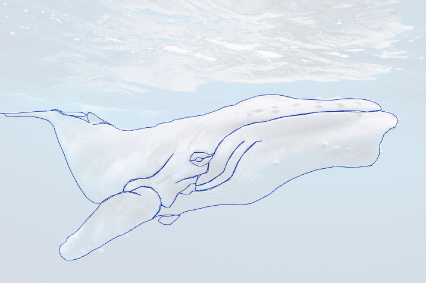
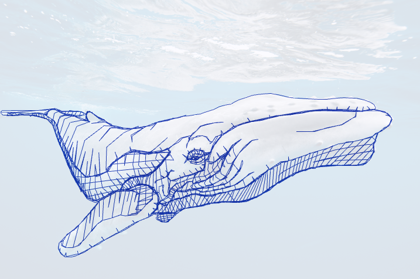

EA2 - 2D Geometrie aus Linien - Pascal Hürten
WebGL Drawing Canvas
Shader Editor - Layer
Vertex Shader
Fragment Shader
Quellen & Hinweise
Anleitung zur Nutzung:
- Zeichnen: Klicke auf das Canvas, um Punkte hinzuzufügen
- Kontinuierliches Zeichnen: Halte Strg/Ctrl und ziehe, um mehrere Punkte zu setzen
- Rückgängig: Rechtsklick entfernt den letzten Punkt
- Layer verwalten: Erstelle neue Layer mit "+ Add Layer" und wechsle zwischen ihnen
- Draw-Mode: Wähle verschiedene Rendering-Modi (LINE_STRIP, TRIANGLES, etc.)
- Shader bearbeiten: Klicke auf "✎ Shader" bei einem Layer für erweiterte Effekte
- Export/Import: Speichere deine Arbeit oder lade Vorlagen
Referenzen:
- Wal wurde von diesem Foto abgepaust: https://jooinn.com/img/get
- Repo: https://git.mylab.th-luebeck.de/pascal.huerten/gvt/-/tree/master/public/ea2

